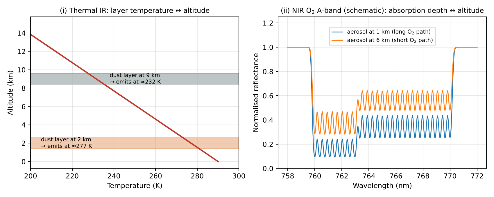
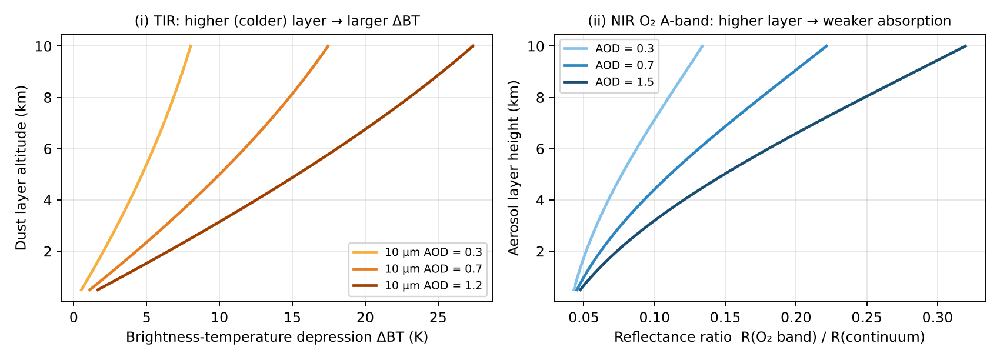

Xác định độ cao aerosol bằng cảm biến thụ động
Retrieving aerosol altitude with passive sensors — Đề cương chương 8
Vì sao cần độ cao aerosol
Chất lượng không khí
Phân biệt PM bề mặt với aerosol vận chuyển trên cao.
Vận chuyển xa
Lớp cao đi xa hơn.
Hiệu ứng bức xạ
Độ cao quyết định cân bằng bức xạ.
An toàn hàng không
Tro núi lửa.
Cảm biến thụ động chỉ suy ra độ cao gián tiếp, qua một hiệu ứng phụ thuộc độ cao.
Hai nguyên lý một hình

Hình 21 (đề cương): (i) TIR — lớp phát xạ ở nhiệt độ của nó; (ii) dải A của O₂ — lớp cao thì ít O₂ phía trên.
Cả hai truy hồi độ cao cùng AOD bằng cách khớp phổ với mô hình truyền bức xạ.
Hồng ngoại nhiệt: nguyên lý
Phát xạ có lớpI ≈ B(Ts) e−τaer + B(Tlayer) (1 − e−τaer)
- Gradient nhiệt ≈ −6,5 K/km: lớp càng cao càng lạnh
- Lớp càng cao → nhiệt độ sáng càng thấp
- Tín hiệu ∝ τaer × (Ts − Tlayer)
Ví dụ số: lớp ở 1 km và 5 km
| Lớp | Tlayer (K) | BT đo (K) | ΔBT = Ts − BT |
|---|---|---|---|
| 1 km | 293,5 | 297,49 | 2,51 K |
| 5 km | 267,5 | 288,54 | 11,46 K |
Ts = 300 K, τ = 0,5 ở 10 µm. Mô hình đơn giản (không tán xạ, không H₂O); Python đảo Planck ở 10 µm. Lớp 5 km cho ΔBT lớn gấp ~4,6 lần lớp 1 km.
Suy biến AOD và độ cao
| Lớp | Độ cao | τ | ΔBT |
|---|---|---|---|
| Mỏng – cao | 5 km | 0,10 | 2,65 K |
| Dày – thấp | 1 km | 0,54 | 2,65 K |
Cùng độ giảm nhiệt độ sáng: phải truy hồi đồng thời AOD và độ cao, dùng dạng phổ trong cửa sổ 8–12 µm và nhiệt độ từ dải CO₂.
Hồng ngoại nhiệt: ưu và nhược
Ưu điểm
• Ngày và đêm
• Trên sa mạc sáng
• Nhạy hạt thô: bụi, tro
• IASI, AIRS
• Trên sa mạc sáng
• Nhạy hạt thô: bụi, tro
• IASI, AIRS
Nhược điểm
• Cần tương phản nhiệt (thất bại: lớp thấp, nghịch nhiệt, bề mặt lạnh)
• Nhạy độ phát xạ bề mặt
• Không hợp khói, sulfate mịn
• Nhạy độ phát xạ bề mặt
• Không hợp khói, sulfate mịn
Dải A của O₂ (khoảng 760 nm)
- O₂ phân bố đều, profil biết trước
- Lớp aerosol cao → photon phản xạ sớm
- Đường đi qua O₂ ngắn → hấp thụ yếu, vạch nông
- Lớp thấp → hấp thụ O₂ mạnh
R(λ) ≈ Raer(λ) · exp( −σO₂(λ) NO₂(trên lớp) · AMF ) + …
| Độ cao | O₂ trên lớp |
|---|---|
| 1 km | 0,87 |
| 3 km | 0,65 |
| 5 km | 0,49 |
| 8 km | 0,32 |
Độ nhạy theo độ cao của lớp

Hình 22 (đề cương): mô hình đơn giản — độ nhạy của tín hiệu TIR và dải A của O₂ theo độ cao lớp aerosol.
Bảng phía trước dùng mô hình mũ H = 7 km, minh họa.
Dải A của O₂: ưu và nhược
Ưu điểm
• Không cần tiên nghiệm khí
• Phân giải ngang cao
• Mọi loại aerosol, cả khói và sulfate
• TROPOMI ALH ~0,5–1 km
• Phân giải ngang cao
• Mọi loại aerosol, cả khói và sulfate
• TROPOMI ALH ~0,5–1 km
Nhược điểm
• Chỉ ban ngày
• Cần AOD đủ lớn (> ~0,3–0,5)
• Nhạy albedo bề mặt
• Loại mây; giả định một lớp
• Cần AOD đủ lớn (> ~0,3–0,5)
• Nhạy albedo bề mặt
• Loại mây; giả định một lớp
Phương pháp thụ động khác
Thị sai đa góc
MISR: độ cao vệt khói cháy và núi lửa.
Chỉ số UVAI
UVAI phụ thuộc độ cao lớp.
Phức O₂–O₂ 477 nm
OMI: va chạm O₂–O₂.
Exam checklist — Chương 8
1
TIR: phát xạ ở nhiệt độ lớp; T(z) giảm → lớp cao = lạnh = BT thấp; cần tương phản nhiệt; ngày-đêm; bụi/tro
2
Dải A O₂: O₂ trộn đều; lớp cao → đường đi ngắn → hấp thụ yếu; ban ngày; nhạy albedo
3
Cả hai truy hồi độ cao cùng AOD bằng mô hình RT / OE
Ý chính
- TIR: lớp cao → lạnh → ΔBT lớn
- O₂ A-band: lớp cao → ít O₂ phía trên
- Truy hồi độ cao cùng AOD
- Bổ sung: MISR, UVAI, O₂–O₂